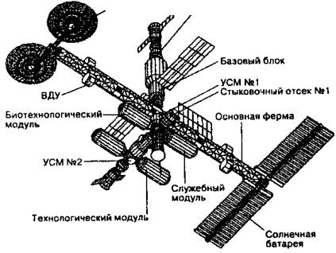
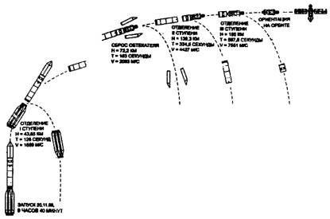
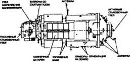
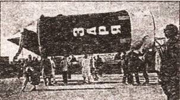
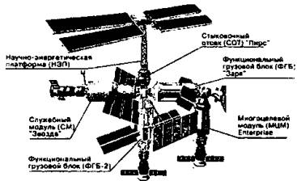

Неосуществленные проекты
Далеко не все наши сограждане согласны с тем, что у России с 2001 года нет национальной станции. У русских собственная гордость. А потому проекты орбитальных баз, построенных на других принципах, нежели станция «Мир», разрабатывались, разрабатываются и еще будут разрабатываться. Давайте рассмотрим хотя бы некоторые из них.
СТАНЦИЯ «МИР-2». Концепция «Мира-2» — станции третьего поколения — была сформулирована еще в 1976 году. Причем первоначально станция ДОС-8 («Заря») создавалась в качестве дубликата станции «Мир-1», который мог бы заменить основную станцию в случае выхода ее из строя.
Базовый блок «Мира-2» был закончен в феврале 1985 года, а главное оборудование смонтировали к октябрю 1986 года. За время монтажа станция несколько выросла. И к 14 декабря 1987 года, когда ее проект утвердил директор НПО «Энергия» Юрий Семенов, долговременная орбитальная станция «Мир-2» должна была состоять из следующих блоков: базовый блок «Заря», 90-тонный орбитальный док, фермы и панели солнечных батарей, служебный, биотехнологический, первый исследовательский, второй исследовательский и технологический модули.
Орбитальный монтаж станции, как ожидалось, должен был начаться в 1993 году. В дело, однако, вмешались политики. Отказ советского руководства от дальнейших планов создания военных баз в околоземном пространстве привел к тому, что в 1989 году работы над блоком «Заря» и остальными модулями были приостановлены.
Тогда в 1991 году руководство НПО «Энергия» выдвинуло проект облегченной станции гражданского направления. Исследовательские модули теперь предполагалось выводить в космос с помощью орбитального корабля «Буран». Полный монтаж станции «Мир-2» новой модификаций мог быть закончен к 2000 году.
В то же самое время руководство НПО «Энергия» уже понимало, что Россия не сможет профинансировать даже такой проект в полном объеме. Поэтому 15 марта 1993 года генеральный директор Юрий Коптев и Генеральный конструктор НПО «Энергия» Юрий Семенов обратились к тогдашнему директору НАСА Голдину с предложением о создании Международной космической станции. А уже 2 сентября 1993 года Председатель Правительства Российской Федерации Виктор Черномырдин и вице-президент США Альберт Гор подписали «Совместное заявление о сотрудничестве в космосе», предусматривающее в том числе создание международной станции на основе проработок по станциям «Мир-2» с нашей стороны и станции «Фридом» — с американской. Так родился проект Международной космической станции — МКС.
В российский сегмент МКС, кстати, вошли практически все (за исключением военных) модули, разработанные для станции «Мир». Здесь и базовый (функционально-грузовой) блок «Заря», и служебный блок «Звезда», и корабль «Прогресс М-45», и корабль «Союз ТМ»…
Таким образом, труды не пропали даром.
«НАДЕЖДА», «РУСЬ» И ДРУГИЕ. Тем не менее как среди общественности, так и среди специалистов все еще существует мнение, что Россия непременно должна иметь свою собственную космическую станцию. И они продолжают создавать национальные проекты.
Так, скажем, специалисты Центральной научно-исследовательской лаборатории «Астра» при Московском авиационном институте подготовили проекты легкой (86 т) станции «Надежда», сравнимой по возможностям с «Миром», и тяжелой станции «Русь» (140,5 т), сопоставимой с МКС.
Поскольку МАИ в первую очередь все-таки учебный институт, то инициаторы этих проектов одним махом убили, так сказать, сразу двух зайцев. У студентов появилась возможность работать над безусловно интересными проектами и получить за это заслуженные «пятерки». Ну, а наши «технари» имеют теперь на всякий случай пару перспективных проектов, которые вполне могут пригодиться в будущем.
Ведь принципиальное отличие этих новых станций состоит прежде всего в так называемой вертикальной компоновке, которая, как утверждают разработчики, позволит сократить затраты энергии на стабилизацию станции на 70–90 % за счет так называемого тросового эффекта.
Вертикальная компоновка удобнее и в случае использования в качестве средства доставки людей и грузов на орбиту так называемого космического лифта. Одна система запросто может быть встроена в другую.
Например, модули «Надежды» не только расположены линейно, один за другим. Для перемещения людей и грузов предусмотрен сквозной внутренний коридор, но снаружи уже предусмотрена так называемая тропа космонавтов — монорельс с передвигающейся по нему кареткой.
Причем, как утверждают разработчики «Надежды», подобную конструкцию можно создать всего за 2–3 года. А стоить она будет раз в десять дешевле (по некоторым данным — даже в 100 раз!), МКС. И это не единственная альтернатива МКС.
И ЕВРОПА ТУДА ЖЕ?… Впрочем, мы — не единственные индивидуалисты в мире. Проект собственной (независимой от Америки и России) орбитальной станции неоднократно обсуждался и в Европе.
Заполучив в свое распоряжение французскую ракету-носитель тяжелого класса «Ариан-5», сотрудники Европейского космического агентства еще с середины 70-х годов прошлого века стали подумывать о создании на орбите своей собственной космической базы.
Причем европейские специалисты не только размышляли, но и действовали и набирали практический опыт. Это их усилиями, к примеру, был спроектирован для НАСА лабораторный модуль «Спейслэб» («Spacelab»), вмещающийся в грузовой отсек «Спейс Шаттла» и предназначенный для проведения исследований и экспериментов на околоземной орбите.
А в начале 80-х годов те же европейские фирмы «МВБ» и «Алиталия», что создали «Спейслэб», разработали концепцию и Европейской орбитальной станции «Колумбус». Ее стоимость оценивалась 1,75 млрд. долларов, что не так уж дорого по космическим меркам.
Однако в это время президент Рональд Рейган призвал европейские страны присоединиться к строительству станции «Фридом», политики надавили на инженеров, и модуль «Колумбус» решили использовать в составе международной станции.
С созданием «Фридома», как вы знаете, тоже ничего не получилось. Программа плавно перешла к созданию «Альфы», а та в конце концов выродилась в программу МКС. Однако европейцы и по сей день недовольны тем, что их люди работают на орбите лишь в составе экспедиций посещения.
Поэтому Европейское космическое агентство не поставило еще креста и на проекте создания независимой, «свободно летящей» научно-исследовательской платформы МТФФ (MTFF — сокращение от «Man Tended Free Flying platform»), разработанном еще в 1986 году.
Правда, в 1991 году программа Европейского космического агентства была серьезно пересмотрена и некоторые проекты пошли под сокращение. В частности, из программы развития были вычеркнуты французский корабль «Гермес» и немецко-итальянская платформа МТФФ.
Тем не менее европейцы продолжают сопротивляться американскому диктату. В частности, не так давно Британское аэрокосмическое объединение БАЕ («British Aerospace Ltd.») выдвинуло свой, альтернативный проект Европейской космической станции. В отличие от проекта «Колумбус» эта станция должна собираться из модулей, каждый из которых представляет собой отдельный космический корабль. Однако и на этот проект у европейцев пока нет достаточного количества свободных денег.
КОСМИЧЕСКОЕ «НАДУВАТЕЛЬСТВО». Американцы тем временем тоже не сидят сложа руки. Потерпев очередное фиаско при катастрофе «Шаттла» «Колумбия» — уже второй за историю существования многоразовых космических кораблей, НАСА было вынуждено пересмотреть реестр доставляемых на орбиту грузов. Ведь наши «Прогрессы» далеко не столь вместительны, как «челноки».
В частности, на МКС до сих пор катастрофически не хватает места. Но даже если в мае 2005 года, как обещают американцы, полеты «Шаттлов» снова возобновятся, самый большой модуль, который они смогут взять с собой, ограничен габаритами грузового отсека «Шаттла». А он составляет 4,5 м в ширину на 18 м в длину. А для перевозки на российском «Протоне» модуль должен быть еще уже. Плюс он должен быть максимально легким, потому что вывод на орбиту каждого килограмма коммерческой нагрузки обходится в 25 000 долларов.
Поэтому в НАСА, в Космическом центре имени Джонсона, разрабатывают ныне модуль совершенно нового типа, а именно… надувной!
Основу модуля, который разработчики назвали «TransHab», составляют углеродные волокна, которые образуют силовой каркас. Сверху оболочка из легкой некстелевой пены. Она, как своеобразная подушка, гасит энергию микрометеоритов, постоянно бомбардирующих поверхность станции.
Между тем энергия маленького камешка, летящего со скоростью 7 / , в 50 (!) раз больше, чем у пули крупнокалиберного пулемета! Поэтому под пеной у «TransHab» лежит еще три слоя кевлара — материала, из которого шьют бронежилеты. И наконец, чтобы сделать стенку модуля еще более прочной, в материал вплетены углепластиковые ленты.
В итоге максимальный размер частицы, которая безопасна для «TransHab», — 1,8 см, в то время как алюминиевый модуль МКС может выдержать частицы диаметром только 1,3 см.
Однако в космосе еще одна опасность, которая не всегда оценивается адекватно. Грузовые корабли и «Шаттлы» тоже несут в себе потенциальный риск. Размеры и инерция многотонных космических бродяг могут быть причиной очень неприятных последствий. Как уже говорилось, при таком столкновении с грузовым кораблем «Прогресс» станция «Мир» была частично выведена из строя. «TransHab» в таком случае, спружинив, просто отлетит в сторону. Он же надувной!
И еще одна деталь: «TransHab» создавался как жилище на орбите, и его конструкция позволяет «быть как дома», находясь намного дальше от Земли. В надувных куполах, к примеру, могут разместиться первые «марсиане», прилетевшие туда с Земли. Впрочем, и на нашей планете ему найдется работа — надежный модуль идеально подходит для жилья исследователей в отдаленных уголках мира или рабочих-нефтяников.
Кстати, аналогичные конструкции разрабатываются и нашими специалистами из Центра имени Г. Н. Бабакина. Накопив тридцатилетний опыт в возведении пневмоконструкций, в том числе и в суровых условиях Арктики, они теперь переносят его и в космос.
Если все пойдет, как запланировано, первые пневматические модули должны появиться на орбите уже в текущем десятилетии.
КОСМИЧЕСКИЙ ЛИФТ А теперь давайте поговорим еще об одной любопытной конструкции, с помощью которой дорога на орбиту, к тому же надувному модулю станет намного короче и проще.
Обычно бывает как? Фантасты высказывают какую-то идею, а инженеры затем пытаются ее осуществить. В данном же случае все обстоит как раз наоборот: фантасты не поспевают за фантазиями инженеров. Судите сами…
Еще 31 июля 1960 года «Комсомольская правда» опубликовала статью ленинградского инженера Юрия Арцутанова. Именно в ней впервые рассказывалось о принципе действия «внеземного» подъемника.
Потом идею подхватили другие специалисты, а всем известный английский писатель-фантаст Артур Кларк подробно описал ее в своем романе «Фонтаны рая».
Внешне все выглядит вроде бы просто. Главный элемент подъемника — трос, один конец которого крепится на поверхности Земли, другой — теряется в далеком космосе на высоте около 100 тысяч км (это примерно четверть расстояния до Луны). Причем, несмотря на то что второй конец троса может быть попросту оставлен в пространстве, он будет натянут, как струна.
Вся хитрость в том, что, подчиняясь законам физики, трос этот окажется под воздействием двух могучих разнонаправленных сил.
Чтобы понять их природу, вспомним доморощенный опыт. Привяжите к бечевке какой-нибудь предмет и начинайте раскручивать его. Как только предмет приобретет некую скорость, веревка тут же натянется. Почему? Да потому, что на предмет действует центробежная сила. А на саму веревку — сила центростремительная, которая и натягивает ее.
Нечто подобное произойдет и с поднятым в космос тросом. Любой объект на его верхнем конце или даже сам свободный конец будет вращаться подобно искусственному спутнику нашей планеты. Стало быть, на этот конец будет действовать центробежная сила. Одновременно на тот же трос будет действовать и противоположная сила — земного притяжения. И тем ощутимее, чем ближе он находится к Земле. А чем дальше в космос, тем, наоборот, энергичнее проявляется центробежный фактор. При определенных условиях две противоположные силы уравновешивают друг друга. Происходит это, когда центр массы гигантского каната находится на высоте 36 тысяч км, то есть на так называемой геостационарной орбите.

Орбитальная станция «Мир-2» предполагалась такой.
Именно гам находящиеся искусственные спутники висят неподвижно над Землей, совершая вместе с ней полный оборот за 24 часа. Вот из этой как бы срединной точки лифтовый канат и должен идти вниз, к Земле. В этом случае огромный кабель будет не только натянут, но и сможет постоянно занимать строго определенное положение — вертикально к земному горизонту, точно по направлению к центру нашей планеты.
А дальше, используя эту рукотворную вертикаль, можно отправлять кабины в космос и опускать их на Землю.
Именно этот способ путешествия в космос и был описан в романе Артура Кларка, вышедшем в свет в 1978 году. Идея Арцутанова, таким образом, приобрела всемирную известность. Вот только воплотить в жизнь ее почему-то никто не торопился. А все потому, что в схеме имелось одно слабое звено. Неизвестно было, на чем подвешивать кабину космического лифта. Если использовать обычный стальной трос, то простейший расчет показывал: он порвется под воздействием собственной тяжести уже при длине 50 км.
Артур Кларк в своем романе предложил заменить сталь на легкий и очень прочный кевлар. Однако, во-первых, где взять такое количество дефицитного и достаточно дорогого материала? А во-вторых и в главных, даже при изобилии кевлара длину каната можно увеличить лишь на сотню-другую километров, то есть достичь орбит низко летящих спутников. На большее и прочности кевлара не хватит…
Это, кстати, понимал сам писатель. Потому придумал некий сверхпрочный «псевдоодномерный алмазный кристалл», который стал основным строительным материалом. Один из героев романа, инженер Морган, поясняет, что такой кристалл не есть абсолютно чистый углерод, «тут есть дозированные микровключения некоторых элементов». И добавляет, что производство таких кристаллов возможно только в невесомости, где нет тяжести, нарушающей кристаллическую решетку.
Самое интересное, что Кларк почти угадал. Нынешний этап интереса к проекту строительства космического лифта связан именно с углеродными кристаллами, хотя и несколько иного вида.

Основные этапы вывода модуля «Заря» в космос.

Схема модуля «Заря».

Модуль «Заря» перед стартом.
В 1991 году японский инженер Сумио Иишима, исследуя графитовую сажу, открыл нечто удивительное — так называемые углеродные нанотрубки. Это микроскопические, не различимые невооруженным глазом пленочки графита, свернутые в виде крохотных цилиндров.
Диаметр каждой такой трубки в миллион раз меньше миллиметра, длина — всего нескольких микрон. Казалось бы, какой от них прок? Однако вскоре выяснилось, что цилиндрики могут самостоятельно сплетаться в такие же микроскопические канатики. Изготовленная же из них нить прочнее алмаза. Почти невесомая паутинка из углеродных нанотрубок диаметром в один миллиметр может выдержать 20-тонный груз!
Имея такой удивительный материал, можно уже и подумать о строительстве космического лифта в обозримом будущем.

Российский сегмент МКС в законченном виде должен выглядеть так.
Во всяком случае, после открытия японского инженера проектом занялись не только фантасты, но и ученые с инженерами. Скажем, Институт перспективных концепций НАСА выделил компании «Highlift Systems» 570 тысяч долларов на первоначальные исследования.
Ныне закончен первый этап исследований. В отчете, включающем 80 страниц убористого текста, а также многочисленные чертежи и графики, сказано однозначно: проект вполне может быть осуществлен практически. Во всяком случае, один из его авторов, доктор Брэдли Эдвардс, твердо уверен в успехе. По его мнению, при соответствующем финансировании уже через два года можно будет начать строительство стартовых сооружений.
Причем осуществление этого проекта грозит обернуться немалой экономией средств. Дело в том, что ныне доставка 1 кг полезного груза в космос обходится не менее 10 тысяч долларов, причем подъем на высокую, геостационарную орбиту обходится даже в 40 тысяч. Космический подъемник предполагает снижение стоимости доставки до 100 долларов, т. е. в 100–400 раз. И это только на первом этапе…
Благодаря такой системе доставки грузов станут рентабельными орбитальные заводы для производства уникальных лекарств и специальных материалов, строительство в космическом пространстве солнечных электростанций и туристических гостиниц, бурное развитие космического туризма.
Но пока все это — далекие мечты, осуществление которых зависит от того, как пойдут дела со строительством первого космического лифта. Его концептуальный проект в нынешнем виде содержит достаточно подробные конструкторские разработки. Вот как проясняет некоторые технологические подробности сам доктор Эдвардс на своем сайте в Интернете.
Прежде всего ныне он предлагает отказаться от строительства на Земле огромной башни, высотой 50 км, как это мыслилось в предыдущих проектах. Сооружение такой Вавилонской башни не только значительно удорожает проект, но и во многом ставит под сомнение его исполнение, ведь ни у кого нет опыта строительства башен, достигающих стратосферы.
Сам Эдвардс предлагает сделать наземной станцией для космического лифта океанскую платформу — наподобие тех, с которых ведут добычу нефти. Ее можно построить в Тихом океане, в таком районе, где практически не бывает гроз.
Вместо троса, как уже говорилось, будет использоваться широкая лента из углеродных нанотрубок. Длина ленты — почти 100 тысяч километров (ею можно два с половиной раза обернуть земной шар), ширина — 1 м. Даже при планируемой толщине ленты всего в 2 микрона общая масса, учитывая гигантскую длину этой необычной «дорожки», должна получиться довольно солидной — около 800 тонн. Тем не менее, как показывает расчет, нанотрубки должны выдержать такую тяжесть.
Перед тем как развернуть сверхтонкую и сверхдлинную ленту Земля-космос, планируется провести тщательные испытания элементов необычного лифта. Сначала нить из углеродных нанотрубок будет проверена в лабораторных условиях. Фрагменты ее подвергнутся воздействию атомарного кислорода, перепадов давления, излучения… Затем прототип подъемника поднимут с помощью воздушного шара на высоту 1000 м. Будут работать лазер, оптическая техника, словом, весь многосложный комплекс. И, наконец, заключительная серия испытаний пройдет на самой геостационарной орбите.
Сама схема строительства на сегодняшний день выглядит так. Сначала на геостационарную орбиту обычными ракетами будет доставлено около 40 т ленты шириной от 5 до 11,5 см в ширину и толщиной в микроны. Когда она будет развернута на всю длину и достигнет поверхности Земли, то сможет удерживать полезные грузы весом до 495 кг.
Далее специальные подъемники будут подниматься по первоначальной ленте и постепенно расширять ее. На каждое восхождение уйдет от 3 до 4 дней. Через 2,5 года лента будет готова полностью.
Конструкция подъемника как бы охватывает ленту с двух сторон. Кабину планируется оснастить двумя комплектами роликов или гусениц. Лента будет проходить между ними, обеспечивая плавный подъем или спуск кабины за счет трения.
Для движения подъемника по ленте вверх или вниз предполагается использовать электрические двигатели. Энергия будет передаваться с Земли с помощью лазера или микроволнового излучения. Посланный им луч преобразуется в электричество, которое приведет в действие моторы лифта. Скорость движения кабины составит 200 километров в час.
Все этапы научно-исследовательских работ, проектирования и строительства четко расписаны. Так, при соответствующем финансировании уже через два года могут быть получены первые образцы сверхпрочной ленты. Ее испытания, соответствующие доработки, развертывание массового производства займут еще около 3 лет. Строительство отнимет примерно шесть лет. Наконец, еще 2,5 года уйдет на расширение ленты длиной в 100 000 км. Таким образом, первая, сравнительно небольшая гондола с полезным грузом 5 т могла бы подняться в космос где-то в 2017–2020 годах.
Так полагает доктор Эдвардс. Однако многие эксперты не разделяют его оптимизма. Прежде всего непонятно, удастся ли найти в нынешнем мире столь много свободных финансов. Ведь только на сооружение первого лифта требуется около 10 млрд долларов. А вся программа стоит как минимум вчетверо дороже.
Кроме того, не решены многие принципиальные вопросы. Например, как защитить транспортную ленту от метеоритов и тех обломков, которые в изобилии ныне болтаются на околоземной орбите? Если покрыть ее синтетическим материалом или тонкой металлической броней, то сразу же ее вес многократно увеличится.
Еще одна трудность — мощные порывы ветра. Метровая по ширине лента имеет высокую парусность. А гарантировать, что в данном районе океана сильных ветров не будет, невозможно. Придется также подумать и о защите всего сооружения от ударов молний, океанских штормов и т. д.
Наконец, подобное сооружение — лакомый кусок для террористов. Представьте себе, каков будет резонанс, если в океан ухнет кабина космического лифта…
Тем не менее даже скептики признают чрезвычайную перспективность использования тросовых транспортных систем в космонавтике в будущем. Спор идет лишь о сроках. Так, представитель НАСА Роберт Казанова полагает, что первый космический лифт может появиться лет через 50.
Примерно такие же сроки называет и доктор технических наук, лауреат Государственной премии Георгий Успенский, возглавляющий отделение в Центральном НИИ машиностроения Росавиакосмоса. Он еще в 1989 году опубликовал подобные же расчеты по перспективным космическим транспортным системам.
Ну, а дальше вполне возможно продление этой трассы до Луны. Освоение же Луны, строительство на ней ракетодрома откроют возможность путешествий к дальним окраинам Солнечной системы или даже в иные звездные системы.
«ВАВИЛОНСКИЕ БАШНИ» XXI ВЕКА. Впрочем, постройка космического лифта — не единственный способ создать более дешевый способ транспортировки людей и грузов в космос.
По словам эксперта центра НАСА в Кливленде Джефри Лендиса, традиционный способ доставки грузов с помощью ракет себя уже исчерпал. Пытаясь модернизировать его, специалисты предлагают запускать ракеты не с Земли, а, например, с борта самолета-носителя, который поднимается на высоту 10–12 км. Таким образом, удастся сэкономить по крайней мере одну ступень.
Впрочем, нынешние самолеты позволяют поднять сравнительно небольшие, легкие носители, которые, в свою очередь, способны транспортировать на орбиту сравнительно компактные и немассивные грузы. Для выведения на орбиту крупных спутников и модулей орбитальных станций Дж. Лендис и его коллеги предлагают модернизировать… сам космодром.
«Надо оснастить стартовую площадку высокой башней, а еще лучше — одновременно перенести ее на какую-нибудь высокую гору, — говорит Лендис. — Наши расчеты показывают, что старт ракеты с высоты в 15 км позволяет увеличить полезную нагрузку в 1,5 раза, а с 20 км — вдвое…»
Эксперты НАСА полагают, что современные композитные материалы на основе углерода позволят в скором будущем соорудить «Вавилонскую башню» высотой в 25 км. С ее вершины полезную нагрузку можно было бы выводить в космос с помощью всего одноступенчатой ракеты, а не трехступенчатой, как ныне. И если ныне полезная нагрузка составляет примерно 2 процента от стартовой массы всего носителя, то с помощью высотных запусков этот показатель удастся существенно повысить.
Строительство же подобного сооружения в денежном эквиваленте обойдется примерно во столько же, как и возведение обычного небоскреба где-нибудь на Манхетгене.
Интересно, что подобную же идею изобретатель из Самары, уже знакомый нам специалист по ракетно-космической технике В. Н. Пикуль предложил еще в конце 90-х годов прошлого века.
«Особенность моего способа состоит в медленном разгоне особой платформы с ракетой на борту по широколейному железнодорожному спуску (точнее, в данном случае — подъему), — рассказывал он. — По мере возрастания скорости подъем становится все круче, и наконец ракета стартует практически вертикально, используя мощь собственных двигателей».
В свою очередь, Пикуль опирался на идею К. Э. Циолковского, красочно описанную Александром Беляевым в научно-фантастической повести «Звезда КЭЦ».
Причем строить подобные космодромы оба исследователя предлагают где-нибудь в гористых, малонаселенных местах. Горы, как уже говорилось, дают природный выигрыш в высоте, ведь вершины некоторых пиков находятся на высоте 8 км над уровнем моря.
Кстати, подобная башня может стать основанием и для космического лифта, о котором уже говорилось выше.